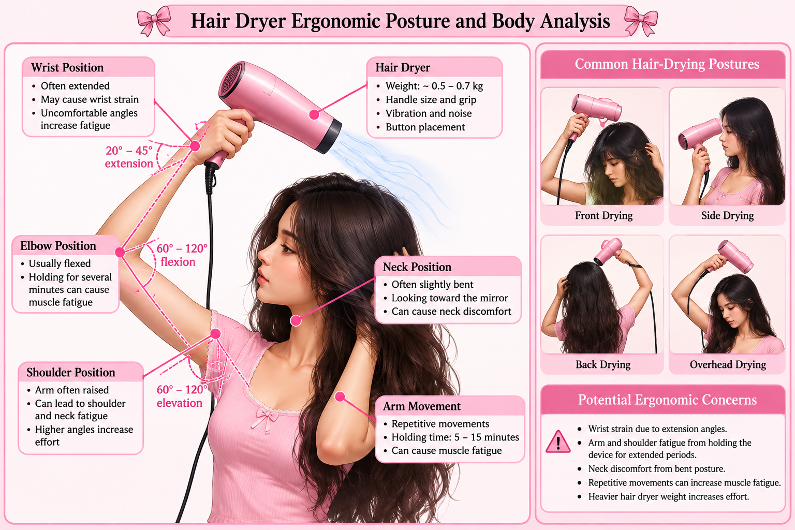
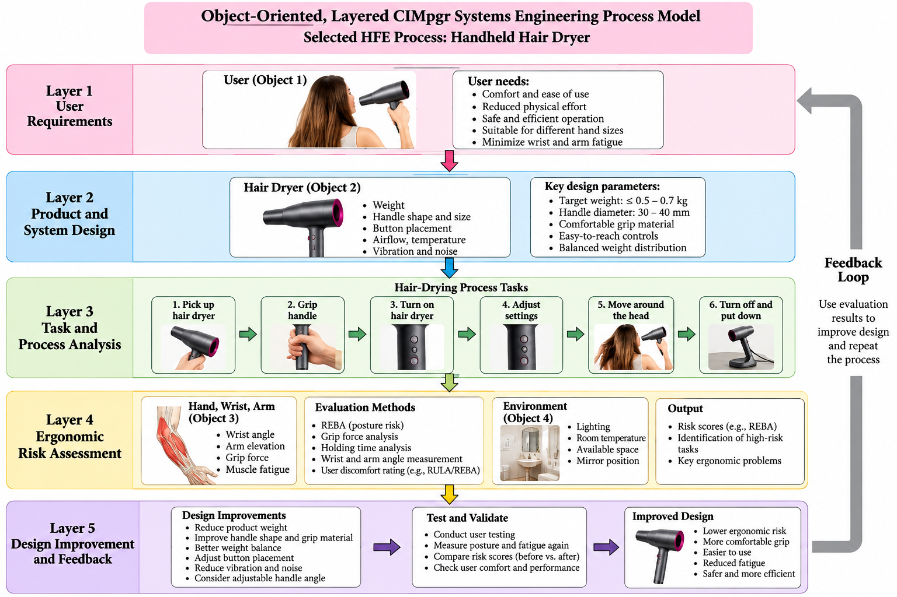

For this assignment, my selected product is a handheld hair dryer from BetterUse Engineering. The purpose of this project is to study how people use a hair dryer and how its design can affect their comfort, safety, and physical performance.
Using a hair dryer requires a person to hold the device, move their arm, adjust their wrist, and sometimes keep their arm raised for several minutes. These movements can cause muscle fatigue and discomfort, especially when the hair dryer is heavy or the handle is difficult to grip.
The main Human Factors Engineering (HFE) goal is to improve the interaction between the user and the hair dryer. This includes studying the weight of the device, handle design, wrist position, arm movement, vibration, and noise.
In this assignment, I will develop an object-oriented, layered CIMpgr systems engineering process model. The model will divide the hair-drying process into connected layers to show how the user, equipment, tasks, and working environment interact.
The model will also help identify ergonomic risks and support engineering improvements that can make the hair dryer more comfortable, efficient, and safe to use.

Figure 2. Hair dryer ergonomic posture analysis showing wrist, elbow, shoulder, and neck positions, along with potential ergonomic risks during hair-drying tasks.
In this project, the object-oriented approach is used to divide the hair-drying system into smaller components called objects. Each object has its own characteristics and functions. These objects interact with each other during the hair-drying process.
The five main objects in our model are:
The layered CIMpgr approach organizes the hair-drying process into different levels. Each layer has a specific responsibility, and information moves between the layers to support ergonomic evaluation and design improvements.
Identify the user's needs, including comfort, safety, ease of use, and reduced physical effort.
Analyze the hair dryer's weight, handle dimensions, button placement, and overall design.
Break down the hair-drying process into individual tasks:
Evaluate wrist posture, arm position, grip effort, and duration of use. Measurements and ergonomic assessment methods can help identify possible risks.
Use the evaluation results to recommend improvements, such as reducing product weight, improving handle shape, or changing button placement. Test the improved design and repeat the evaluation.
The five layers work together as one engineering system.
The process begins by identifying user requirements. These requirements guide the product design. Next, the user performs the hair-drying tasks while the ergonomic evaluation system collects measurements and identifies possible problems.
The results are then used to recommend design improvements. The improved design is evaluated again to determine whether it reduces ergonomic risks.
This creates a continuous feedback process that supports safer and more comfortable hair-dryer use.

Figure 1. Object-oriented, layered CIMpgr systems engineering process model for the BetterUse Engineering handheld hair dryer.
The diagram shows the five connected layers of the CIMpgr systems engineering model for the BetterUse Engineering Hair Dryer.
Layer 1 – User Requirements: The process starts by identifying user needs, including comfort, safety, and ease of use.
Layer 2 – Product and System Design: The hair dryer's weight, handle shape, button placement, and other design characteristics are examined.
Layer 3 – Task and Process Analysis: The hair-drying process is divided into six tasks, from picking up the hair dryer to turning it off and putting it down.
Layer 4 – Ergonomic Risk Assessment: The user's wrist angle, arm position, grip effort, and holding time are evaluated to identify possible ergonomic risks.
Layer 5 – Design Improvement and Feedback: Based on the evaluation results, improvements are recommended. The design is then tested again to check whether ergonomic risks have been reduced.
The feedback loop connects the final layer back to the beginning of the process. If testing shows that the hair dryer still causes discomfort or excessive physical effort, the design requirements are reviewed and the process is repeated.
This makes the model a continuous engineering improvement system rather than a one-time evaluation.
The weight of a hair dryer affects how much force the user must apply while holding it. A heavier hair dryer may increase muscle fatigue during long periods of use.
We can calculate the gravitational force using:
Where:
Assume the hair dryer weighs 0.7 kg.
This means the user must support approximately 6.87 N of gravitational force while holding the hair dryer.
If we reduce the weight to 0.5 kg:
Percentage reduction:
When holding a hair dryer, the weight creates a turning effect called torque. The torque depends on the weight of the device and the distance between its center of mass and the wrist joint.
Equation:
Where:
Assume:
For a lighter hair dryer weighing 0.5 kg, with the same distance and angle:
Holding a hair dryer for a long time can increase muscle fatigue, especially when the arm is raised.
For this analysis, we can compare how long a user holds the hair dryer during different drying sessions.
Example:
We can calculate the total holding time:
REBA stands for Rapid Entire Body Assessment. It is an ergonomic assessment method used to evaluate postural risks during physical tasks.
For the hair dryer, we can examine:
The REBA method assigns scores based on body posture, force or load, coupling, and activity. The scores are combined using the official REBA scoring tables.
| REBA Score | Risk Level | Action |
|---|---|---|
| 1 | Negligible | None necessary |
| 2–3 | Low | May be necessary |
| 4–7 | Medium | Necessary |
| 8–10 | High | Necessary soon |
| 11–15 | Very high | Necessary now |
For our project, we would observe the user during hair drying, record their body positions, and calculate a REBA score using the official assessment method.
The calculations show that reducing hair dryer weight can decrease the force and torque experienced by the user. Holding time and body posture are also important factors in evaluating ergonomic risks.
Note: All masses, distances, angles, and holding times used in these calculations are hypothetical examples, not measurements collected from participants.
By combining mathematical calculations with ergonomic assessment methods, BetterUse Engineering can compare different hair dryer designs and identify improvements that may increase comfort and reduce physical strain.
This algorithm evaluates the ergonomic risks of using the BetterUse Engineering Hair Dryer. It uses the same measurement and assessment rules each time so the evaluation is repeatable.
START
INPUT mass_kg, distance_m, angle_degrees, holding_time_min
INPUT observed_posture_and_REBA_factors
gravity = 9.81
force_N = mass_kg * gravity
angle_radians = angle_degrees * π / 180
torque_Nm = force_N * distance_m * sin(angle_radians)
REBA_score = Calculate_REBA_using_official_tables(
observed_posture_and_REBA_factors
)
IF REBA_score >= 4 THEN
DISPLAY "Ergonomic improvement required"
RECOMMEND improvements based on observed risk factors
ELSE
DISPLAY "Low or negligible posture risk"
ENDIF
SAVE force_N, torque_Nm, holding_time_min, REBA_score
REPEAT assessment for proposed improved design
COMPARE original and improved results
ENDThe Calculate_REBA_using_official_tables function represents the standard REBA assessment procedure; the score cannot be calculated from weight and holding time alone.
For the hypothetical original design, m = 0.7 kg, d = 0.15 m, and θ = 90°. The force is 6.87 N and wrist torque is 1.03 N·m. For the hypothetical lighter design, m = 0.5 kg with the same distance and angle, force is 4.91 N and wrist torque is 0.74 N·m. Both decrease by about 28.6%.
These are theoretical comparisons, not actual test results. An observed REBA score and user discomfort measurements would be needed to determine whether the improved design reduces overall ergonomic risk.
The algorithm takes input from the user, hair dryer, and working environment objects. Layer 4 processes the measurements and posture observations; Layer 5 uses the results to recommend changes and sends feedback to the earlier design layers. This makes the evaluation systematic and repeatable.
The object-oriented, layered CIMpgr systems engineering process model can be used to evaluate and improve the ergonomic design of the BetterUse Engineering Hair Dryer.
In real life, people use hair dryers for several minutes while moving their arms and wrists in different directions. These movements may cause discomfort or muscle fatigue, especially when the hair dryer is heavy or difficult to hold.
Our engineering model helps identify these problems by dividing the hair-drying process into five connected layers: user requirements, product design, task analysis, ergonomic risk assessment, and design improvement.
Each layer provides information to the next layer, allowing engineers to evaluate the product systematically.
To apply our model, we can conduct a simple ergonomic evaluation.
Ask a participant to use a hair dryer during a normal hair-drying task. Observe their arm movements, wrist positions, and grip.
Record the hair dryer's weight, holding time, wrist position, and arm elevation. Ask the participant to rate their discomfort on a scale from 0 to 10, where 0 means no discomfort and 10 means extreme discomfort.
Use the equations from Step 4 to calculate gravitational force and wrist torque. Apply the REBA assessment method to evaluate posture-related ergonomic risks.
Based on the results, engineers can recommend:
Repeat the same hair-drying task using the improved design. Compare the measurements and user discomfort ratings with the original design.
This process allows engineers to evaluate whether the changes improve the user's experience.
The proposed improvements may provide several benefits.
Based on our example calculations, reducing the hair dryer mass from 0.7 kg to 0.5 kg decreases gravitational force by approximately 28.6%.
The example wrist torque decreases from 1.03 N·m to 0.74 N·m when the hair dryer's mass is reduced while keeping the same center-of-mass distance and orientation.
A better handle design and balanced weight distribution may reduce discomfort during longer hair-drying sessions.
Easy-to-reach buttons and a comfortable grip may help users control the hair dryer without unnecessary wrist movements.
The same engineering procedure can be repeated for different hair dryer designs, allowing engineers to compare their performance using consistent measurements.
These benefits are expected outcomes that would need to be confirmed through physical testing.
In this assignment, I developed an object-oriented, layered CIMpgr systems engineering process model for the BetterUse Engineering Hair Dryer.
The model includes five connected layers that explain how user requirements, product design, task analysis, ergonomic evaluation, and design improvements work together.
I also used mathematical equations to analyze gravitational force and wrist torque. The example calculations showed that reducing the hair dryer's mass from 0.7 kg to 0.5 kg can decrease gravitational force and wrist torque by approximately 28.6% under the same holding conditions.
The algorithm and pseudocode provide a repeatable method for evaluating ergonomic risks and recommending improvements.
Overall, this project demonstrates how Human Factors Engineering can be applied to everyday products. By using engineering calculations, ergonomic assessment methods, and a structured process model, we can develop hair dryers that are more comfortable, easier to use, and potentially safer for users.